Комплексное решение Антифрод в договорном документообороте предназначено для автоматизированной проверки типовых договоров при помощи инструментов искусственного интеллекта. Оно позволяет отслеживать изменения в документе на каждом этапе его обработки и предпринимать действия, если менеджер или контрагент вносит неразрешённые дополнения. Это помогает избежать ошибок из‑за человеческого фактора и оптимизировать проверку документов.
начало внимание
Решение доступно только для поставки ELMA365 On-Premises.
конец внимание
После установки решения можно в рамках бизнес-процессов:
- выделить в сгенерированном документе формата .docx области, доступные для редактирования. Менеджер сразу увидит, какой текст можно и нельзя изменять;
- заполнить документ в формате .docx значениями из системы. Если в карточке договора изменились данные, например, сведения о подписанте, можно автоматически внести новую информацию в уже сформированный файл;
- проверить отредактированный менеджером типовой договор в формате .docx перед отправкой контрагенту. Это позволяет убедиться, что в текст внесены только разрешённые изменения;
- сравнить подписанный договор, полученный от контрагента, с его изначальной версией. Сопоставление доступно для документов в формате .pdf — как с текстовым слоем, так и без него. Процедура позволяет гарантировать, что в документе нет несогласованных дополнений.
начало внимание
Решение предназначено для работы с документами только на русском языке.
конец внимание
В состав решения входят:
- Модуль антифрод, с помощью которого настраивается интеграция с сервером ИИ. После подключения модуля в дизайнер бизнес-процессов добавятся графические элементы:
- демонстрационный раздел Антифрод, в котором можно ознакомиться с работой решения.
Установка решения и подключение модуля
Чтобы установить решение и настроить интеграцию с моделью искусственного интеллекта, выполните следующие действия:
- На главной странице, в левом меню нажмите на значок
 . В открывшемся окне Настройка Разделов и Решений перейдите на вкладку Решения, нажмите кнопку + Добавить решение и выберите Скачать.
. В открывшемся окне Настройка Разделов и Решений перейдите на вкладку Решения, нажмите кнопку + Добавить решение и выберите Скачать. - В открывшемся каталоге ELMA365 Store выберите решение Антифрод в договорном документообороте и установите его.
- После загрузки решения в систему добавится Модуль антифрод и демонстрационный раздел Антифрод. Поскольку решение является платным, его необходимо активировать. Для этого перейдите в раздел Администрирование > Управление лицензиями и напротив названия решения нажмите кнопку Активировать.
- Подключите и настройте модуль. Для этого перейдите в раздел Администрирование > Модули > Модуль антифрод. На странице модуля укажите необходимые настройки. При заполнении полей не забудьте сохранять настройки каждый раз, если вы переходите в другие разделы системы:
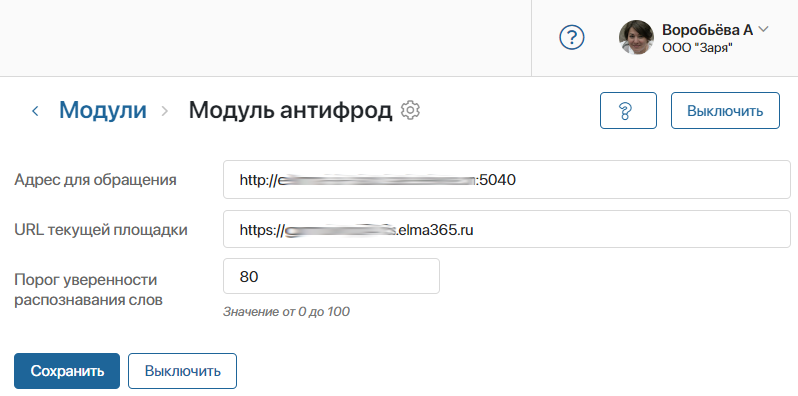
- Адрес для обращения — адрес сервера, на котором установлена платформа ИИ;
- URL текущей площадки — скопируйте и вставьте в это поле URL-адрес компании, в которую вы установили решение;
- Порог уверенности распознавания слов — используется для блока Сравнение исходящего и входящего документов. Укажите процент уверенности, при котором слово в отсканированном документе в формате .pdf считается распознанным. При сравнении документов такие слова автоматически сопоставляются с текстом из исходного файла. Нераспознанные слова не участвуют в процедуре сравнения.
Рекомендуем использовать значение по умолчанию — 80. Устанавливать более высокое значение следует, если качество отсканированных документов обычно низкое. Это позволяет гарантировать, что в процедуру сравнения не попадут артефакты печати. Задавать более низкий порог можно, если скан‑копии обычно высокого качества.
- Нажмите Сохранить.
Настройки модуля завершены. Теперь в дизайнере бизнес-процессов доступны специальные блоки, которые позволяют проверять изменения в документах при помощи искусственного интеллекта. Эти блоки можно использовать в процессах, связанных с формированием, согласованием и подписанием типовых договоров.
Для каждого типа договора нужно добавить в систему шаблон и маску.
Подготовка шаблонов и масок
Решение предназначено для проверки договоров, сгенерированных по шаблону. В шаблонах указываются переменные, которые при генерации заполняются данными. Для каждого типа договоров нужно загрузить в систему отдельный шаблон. Подробнее читайте в статье «Шаблоны документов».
Чтобы использовать в бизнес-процессах блоки Подсветка документа по маске, Сравнение документа с маской и Подстановка переменных в документ, для каждого типа договоров нужно также подготовить маску. Это основанный на шаблоне текстовый файл, в котором доступные для редактирования области отмечены с помощью специальных тегов.
Шаги создания маски для договора:
- Юрист или другой ответственный сотрудник отмечает в шаблоне договора доступные для изменения области.
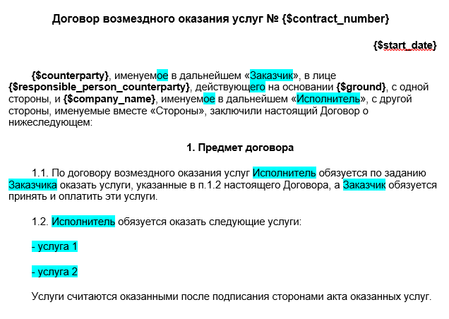
- Администратор готовит текстовый файл маски в формате .docx. В нём отмеченные для редактирования области выделяются тегами <edit></edit>. Чтобы ограничить длину текста, который можно ввести в определённую область, можно прописать в теге максимальное количество символов: <edit max=XXX></edit>.
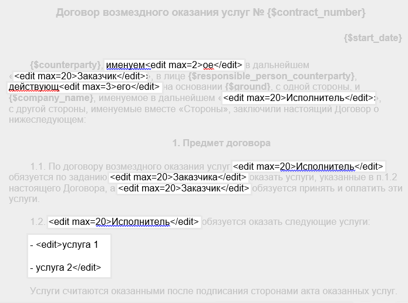
- Администратор загружает готовый файл маски в ELMA365. Например, вы можете хранить маску для каждого типа договоров в отдельном пользовательском приложении Маски документов.
После этого маску можно использовать для проверки договоров на неразрешённые изменения в ходе бизнес-процессов.
Пример работы решения
При установке решения в компанию добавляется демонстрационный раздел Антифрод, в котором можно проверить работу модуля. Вы сможете загрузить типовые договоры, чтобы применить к ним подсветку по маске, проверку на неразрешённые изменения, подстановку новых значений переменных и сравнение подписанной версии с исходной.
Предварительная настройка
- Укажите пользователей, ответственных за согласование договоров в рамках решения. Для этого напротив названия раздела Антифрод нажмите значок шестерёнки и выберите Настройки групп. Откройте страницу группы Согласующие, нажмите Редактировать и в поле Список участников группы добавьте пользователей.
- Подготовьте шаблон для договоров. Вы можете использовать переменные:
- {$Number} — номер договора;
- {$StartDate} — дата заключения;
- {$EndDate} — дата окончания;
- {$MyCompany} — наименование вашей компании;
- {$MyCompanyHead} — глава вашей компании;
- {$MCLegalAddres} — юридический адрес вашей компании;
- {$MCFactAddres} — фактический адрес вашей компании;
- {$MCINN} — ИНН вашей компании;
- {$MCKPP} — КПП вашей компании;
- {$Contractor} — наименование компании-заказчика;
- {$ContractorHead} — ФИО главы компании-заказчика;
- {$Position} — должность главы компании- заказчика;
- {$Address} — юридический адрес компании-заказчика;
- {$FactAddress} — фактический адрес компании-заказчика;
- {$INN} — ИНН компании-заказчика;
- {$KPP} — КПП компании-заказчика;
- {$ContractType} — тип договора.
- Подготовьте на основе шаблона маску, отметив тегами области, которые доступны для редактирования вручную.
- Перейдите в приложение Тип договора и нажмите + Тип договора. В поле Файл загрузите шаблон договора, затем на боковой панели в поле Маска документа нажмите + Создать и добавьте файл маски.
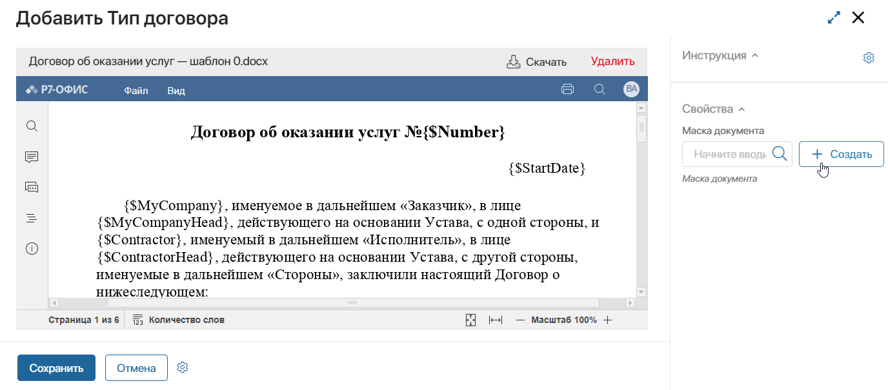
- Сохраните маску и тип договора.
Теперь можно рассмотреть работу раздела.
Подсветка документа, сравнение с маской и подстановка значений
В демонстрационном разделе обрабатываются договоры, подготовленные вручную на основе шаблона. Вы можете проверить документ на неразрешённые изменения, внести в него правки и отправить на согласование.
- В приложении Договор нажмите + Договор и загрузите файл договора с локального компьютера.
- Заполните поля на боковой панели данными и укажите тип договора. От него зависит шаблон и маска, которые используются для проверки договора.
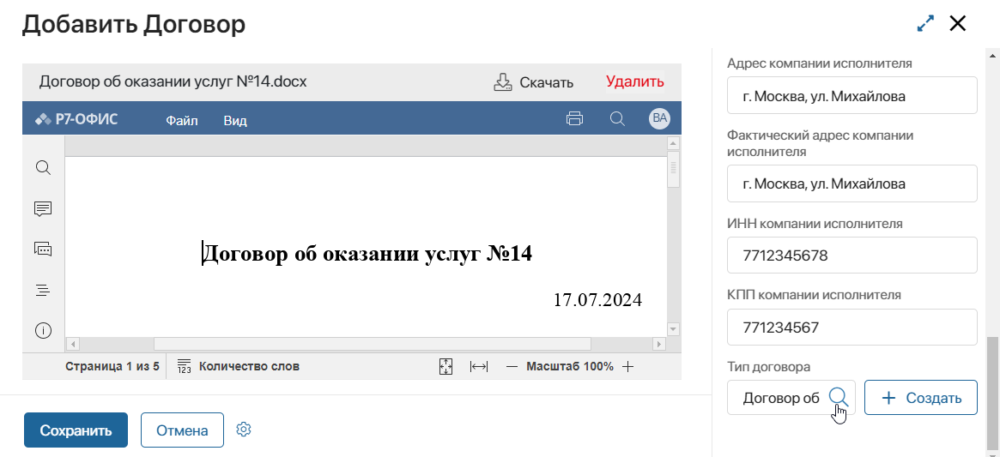
- Запустится бизнес-процесс Сравнение документа с маской. С помощью искусственного интеллекта выполнится подсветка документа по маске — сформируется файл, в котором жёлтым выделены значения переменных, зелёным — области в документе, которые можно редактировать.
- Вам придёт задача просмотреть документ. Если значения переменных в файле не совпадают со значениями из элемента приложения Договоры, вы увидите таблицу изменённых переменных. Под таблицей отображается документ с подсветкой.
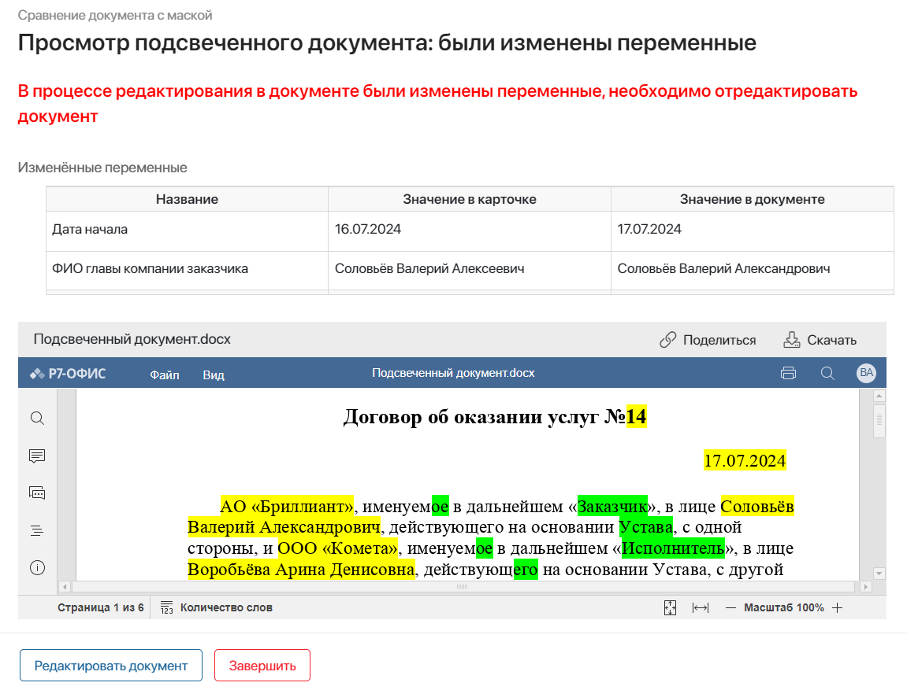
- Нажмите кнопку Редактировать документ. На вас назначится задача изменения текста договора в онлайн-редакторе. Вы можете исправить значения переменных и отредактировать текст, выделенный зелёным.
- Нажмите Сохранить. Проверка договора выполнится повторно, и к нему снова применится подсветка.
- Если в документе нет неразрешённых изменений, вы сможете перейти к следующему шагу, нажав Сравнить документ с маской. На вас назначится задача просмотреть изменения в документе. Удалённый текст отмечен красным, добавленный — зелёным.
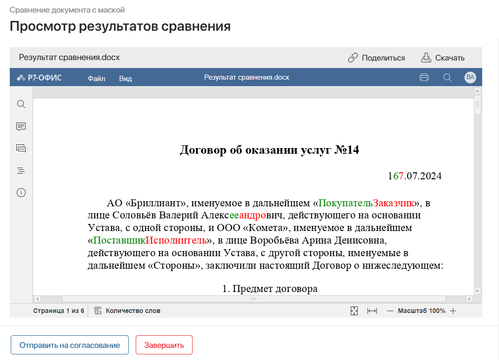
- Нажмите Отправить на согласование, чтобы назначить на согласующих задачу вынести резолюцию. Они смогут просмотреть финальную версию документа, открыть изначально загруженный файл без правок, перейти к элементу договора, а также увидеть внесённые изменения в режиме сравнения.
Один из согласующих берёт задачу в работу и принимает решение по договору. Он может оставить комментарий.
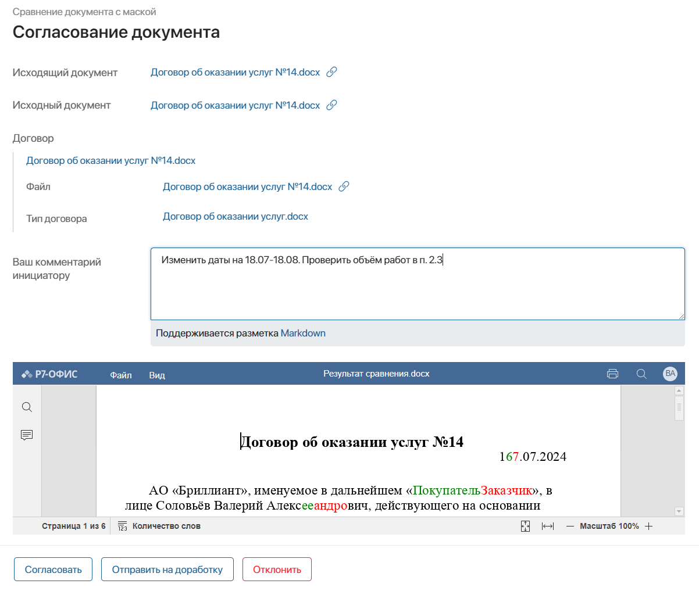
- Если договор отправлен на доработку, вам придёт задача внести изменения по комментариям согласующего в поля договора.
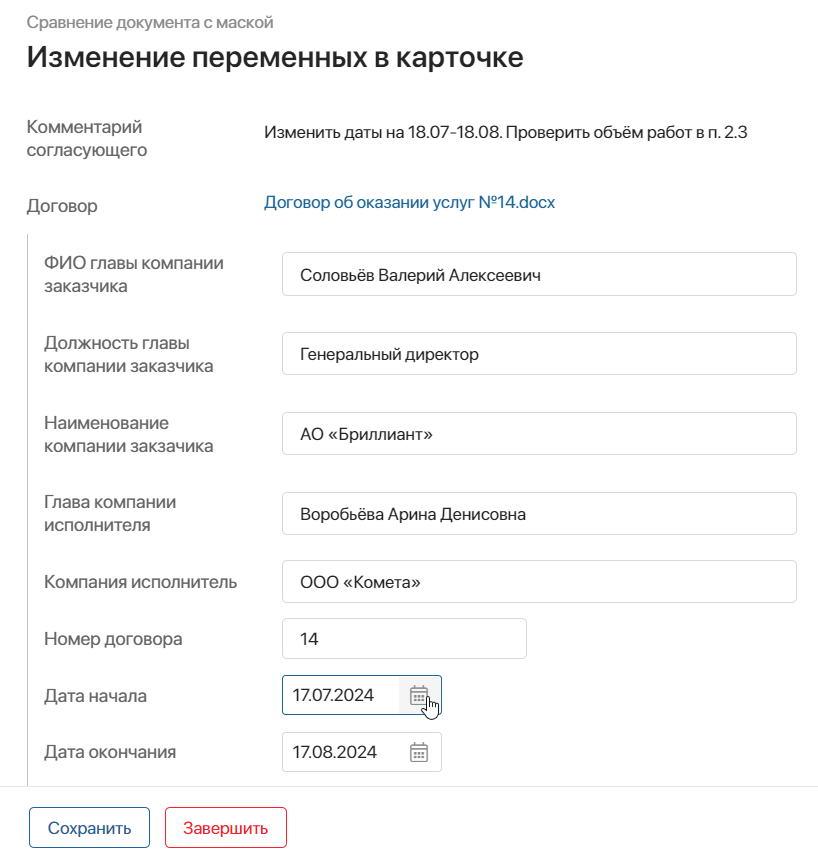
- После сохранения новые значения автоматически подставятся в файл. Вам придёт задача проверить и отредактировать документ с подсветкой так же, как в шагах 4–7. После этого вы сможете отправить документ на согласование повторно.
- После успешного согласования процесс завершится.
В приложении Договоры сохранится финальная версия файла, готовая к отправке контрагенту.
Сравнение входящего документа с исходящим
В демонстрационном разделе можно сравнить подписанный договор в формате .pdf с его исходной версией, чтобы исключить несогласованные изменения со стороны контрагента.
- В приложении Договор нажмите кнопку Сравнить исходящий и входящий документы.
- На вас назначится задача загрузить договоры для сравнения:
- Приложение с исходящим документом — нажмите + Создать и загрузите договор в формате .docx;
- Приложение с входящим документом — нажмите + Создать и загрузите отсканированный договор в формате .pdf.
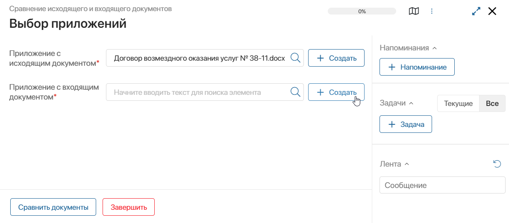
- Нажмите Сравнить документы. С помощью искусственного интеллекта выполнится сопоставление текста договоров. Если в загруженном файле .pdf нет текстового слоя, выполняется его распознавание.
- Вы получите задачу просмотреть результаты сравнения. На боковой панели отобразится отметка о наличии отличий в тексте договоров. В файле сравнения зелёным выделен добавленный тикет, красным — удалённый. Вы можете загрузить файл на локальный компьютер.
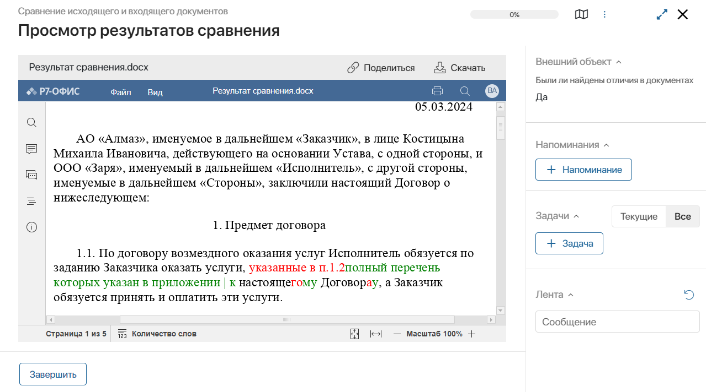
- Нажмите Завершить, чтобы закрыть задачу.
Сравнение позволяет быстро проверить полученный документ на изменения перед тем, как подписывать его со своей стороны.